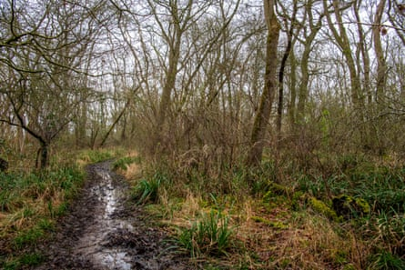
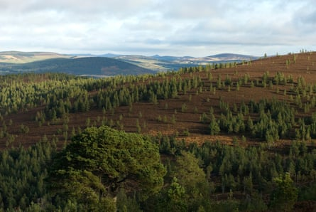
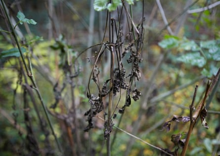

T o the untrained eye, Monks Wood looks healthy and lush in the summer sun. Hundreds of butterflies dance on the edge of footpaths in the ancient Cambridgeshire woodland, which is rich with ash, maple and oak trees. Birds flit through the hedgerows as they feed. A fox ambles through a forest clearing, before disappearing into long grass.
But for a number of years, it has been clear to Bruno Ladvocat and Rachel Mailes that something is missing. In 2022, Ladvocat, Mailes and their research team from Birmingham University were out sampling when they noticed that the small trees that typically cover the woodland floor were increasingly hard to find.
Today, in the dappled sunshine surrounding the largest trees, spaces that would normally be home to a mass of saplings scrambling for light are bare.
This pattern is not limited to the 157-hectare (388-acre) site. From Buckholt Wood in Monmouthshire to Glen Tanar in the Cairngorms, new research across eight sites around the UK shows evidence of a deeply concerning trend: ancient woodlands are failing to regenerate.
Despite having vastly different species, soil types, rainfall and temperatures throughout the year, all the sites were following the same trend: the saplings were dying.
Mailes, a postgraduate researcher and co-author of the research, says: “We could see as we were going through the forest that there wasn’t a lot of regeneration coming back up. I had the sad job of crossing off all the saplings that we couldn’t find or that we were finding dead.
“Across a lot of different species, they were just not coming back. It really made us think: there’s a problem here. Then we ran all the data and we could see that we were right,” she says.
Ash dieback is so bad in Monks Wood that researchers wear helmets when leaving the path to protect them from falling branches.Photograph: Jill Mead/The Guardian
The study, which has not yet completed the peer-review process, found that sapling mortality rate increased by 90%,from 16.2% of saplings a year on average dying before 2000, increasing to 30.8% in 2022.
This means that an average sapling’s chance of survival after five years has fallen from 41.3% to just 15.8%. There was also a 46% drop in the number of small trees becoming established over the same period. At two sites – Denny Wood in the New Forest and Dendles Wood on Dartmoor – no saplings at all have survived since 1995 in the sites studied.
The research is based on rare long-term monitoring of the same areas of ancient woodland since 1959, which allowed researchers to monitor changes over six decades. Its findings have sparked concern about the future resilience of Britain’s forests.
Global heating, disease and overgrazing by deer could all be causing the loss. Drought and extreme heat have become commonplace in many forests. In addition, the rate of biomass loss has started to increase across the study sites, with a rise in mortality rates of the largest trees observed in some areas, rising from 0.5% to 0.8% a year.
This means that one in every 125 of the largest trees die every year instead of one in every 200. As a result, the rate at which the woodlands are removing carbon from the atmosphere has started to fall.
Glen Tanar in the Cairngorms national park. Overgrazing by deer, which is particularly prevalent in Scotland’s forests, severely inhibits natural regeneration.Photograph: Paul Mogford/Alamy
“I look at this as a big worry,” says Ladvocat. “Even in areas which are relatively open, where you would expect to see new trees coming up and more trees surviving, we see less coming up and more dying.
“These forests are in a moment that makes them more vulnerable to the challenges they are facing, such as climate change and new pathogens. If there’s an external force that starts killing a lot of big trees around them, then there might not be enough saplings and small trees to replace them,” he says.
Deeper into Monks Wood, we stumble across a clearing that highlights one of the many pressures in ancient woodlands: a group of ash trees, a skeletal grey, all killed off by ash dieback, a fungal disease. There is no green in the canopy, just a straight view of the blue sky above.
Diseased ash-tree saplings near Framlingham in Suffolk. Ash dieback is projected to kill up to 80% of ash trees in the UK.Photograph: Andy Hall/The Observer
The disease is projected to kill up to 80% of the UK’s ash trees in the coming years, and the problem is so bad in Monks Wood that researchers have to wear helmets when leaving the path to protect them from falling branches. On closer inspection, many other ash trees in the woodland are suffering from the disease.
Concerns about forests’ ability to regenerate in a warming world are not new, but data is sparse and the subject is understudied, the researchers say.
“The conditions of these forests are not unlike those of other forest remnants across Great Britain and much of Europe. That’s why it’s concerning,” says Ladvocat. “These changes may be more widespread than what we were able to detect with our current dataset.”
Ladvocat and Mailes are part of Membra , a project based at Birmingham University aiming to better understand how trees retain and pass on memories of stress and how this knowledge can improve resilience and management. The researchers are looking for ways to help UK woodlands reverse this worrying trend as temperatures continue to rise, bringing yet more stress.
Researchers hope they can develop methods to trigger genetic markers in seeds that make them more likely to survive. In theory, they could lead to the development of a “bootcamp” for seedlings that could help improve forest resilience.
“There is still hope for these forests,” Ladvocat insists. “They are still absorbing carbon; they still have lots of species that are connected to people’s history. There is a possibility that this can be reversed, possibly with the help of people.”
Find more age of extinction coverage here , and follow the biodiversity reporters Phoebe Weston and Patrick Greenfield in the Guardian app for more nature coverage